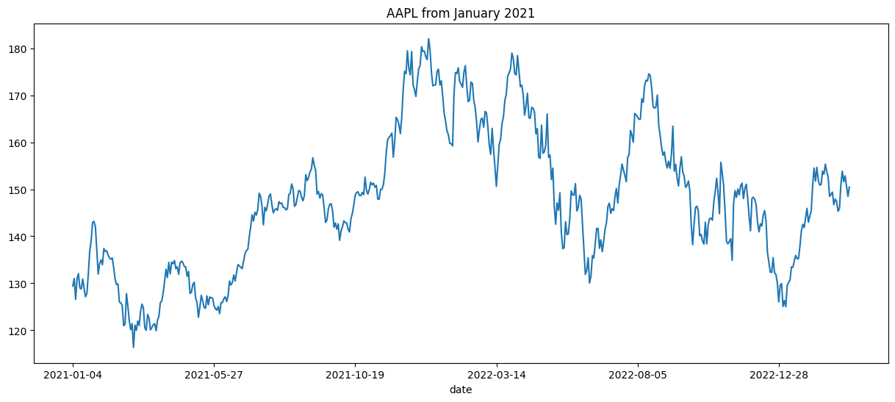

Functionality to easily download data to your environment.
0. BaseIO
There are common methods needed for Downloaders and Submittors. BaseIO implements this functionality and allows us to make abstract base classes. Namely, BaseDownloader and BaseSubmitter (implemented in submission section).
Basic functionality for IO (downloading and uploading).
:param directory_path: Base folder for IO. Will be created if it does not exist.
1. BaseDownloader
BaseDownloader is an object which implements logic common to all downloaders.
To implement a new Downloader, you should inherit from BaseDownloader and be sure to implement at least methods for .download_training_data and .download_inference_data.
The more advanced use case of working with GCS (Google Cloud Storage) is discussed in edu_nbs/google_cloud_storage.ipynb.
2.1.1. Training data
Training + validation data for Numerai Classic can be downloaded with effectively 2 lines of code. Feature stats and overview can be downloaded with .get_classic_features().
# Initializationtrain_base_directory ="test_numclassic_train"numer_classic_downloader = NumeraiClassicDownloader(train_base_directory)# Uncomment line below to download training and validation data# numer_classic_downloader.download_training_data("train_val", int8=False)# Get feature overview (dict)numer_classic_downloader.get_classic_features()# Remove contents (To clean up environment)numer_classic_downloader.remove_base_directory()
No existing directory found at 'test_numclassic_train'. Creating directory...
📁 Downloading'v4.1/features.json' 📁
2023-03-14 17:28:17,711 INFO numerapi.utils: starting download
test_numclassic_train/features.json: 703kB [00:00, 1.65MB/s]
⚠ Deleting directory for 'NumeraiClassicDownloader' ⚠
Path: '/home/clepelaars/numerblox/nbs/test_numclassic_train'
For the training example the directory structure will be:
Inference data for the most recent round of Numerai Classic can be downloaded with effectively 2 lines of code. It can also easily be deleted after you are done with inference by calling .remove_base_directory.
# Initializationinference_base_dir ="test_numclassic_inference"numer_classic_downloader = NumeraiClassicDownloader(directory_path=inference_base_dir)# Download tournament (inference) datanumer_classic_downloader.download_inference_data("inference", version="4.1", int8=True)# Download meta model predictionsnumer_classic_downloader.download_meta_model_preds("inference")# Remove folder when done with inferencenumer_classic_downloader.remove_base_directory()
No existing directory found at 'test_numclassic_inference'. Creating directory...
📁 Downloading'v4.1/live_int8.parquet' 📁
2023-03-14 17:28:19,878 INFO numerapi.utils: starting download
test_numclassic_inference/inference/live_int8.parquet: 4.49MB [00:00, 6.51MB/s]
📁 Downloading'v4.1/meta_model.parquet' 📁
2023-03-14 17:28:21,155 INFO numerapi.utils: starting download
test_numclassic_inference/inference/meta_model.parquet: 20.0MB [00:01, 17.0MB/s]
⚠ Deleting directory for 'NumeraiClassicDownloader' ⚠
Path: '/home/clepelaars/numerblox/nbs/test_numclassic_inference'
For the inference example the directory structure will be:
In this case, download_inference_data and download_training_data have the same functionality as we can’t make the distinction beforehand for an arbitrary dataset on Kaggle.
For authentication, make sure you have a directory called .kaggle in your home directory with therein a kaggle.json file. kaggle.json should have the following structure:
{"username": USERNAME, "key": KAGGLE_API_KEY}
More info on authentication: github.com/Kaggle/kaggle-api#api-credentials
More info on the Kaggle Python API: kaggle.com/donkeys/kaggle-python-api
:param directory_path: Base folder to download files to.
The link to Katsu1110’s yfinance price dataset is https://www.kaggle.com/code1110/yfinance-stock-price-data-for-numerai-signals. In .download_training_data we define the slug after kaggle.com (code1110/yfinance-stock-price-data-for-numerai-signals) as an argument. The full Kaggle dataset is downloaded and unzipped.
Folder can be cleaned up when done with inference.
kd.remove_base_directory()
⚠ Deleting directory for 'KaggleDownloader' ⚠
Path: '/home/clepelaars/numerblox/nbs/test_kaggle_downloader'
4. EODDownloader
EOD Historical data is an affordable Financial data APIs that offers a large range of global stock tickers. Very convenient for Numerai Signals modeling. We will use a Python API build on top of EOD Historical data to download stock ticker data for training and inference.
No existing directory found at 'eod_test'. Creating directory...
If no starting date is passed in download_training_data this downloader will take the earliest date available. That is why the starting date in the filename is the 1st Unix timestamp (January 1st 1970).
⚠ WARNING: Date pull failed on ticker: 'NOT_A_TICKER'. ⚠ Exception: 404 Client Error: Not Found for url:
https://eodhistoricaldata.com/api/eod/NOT_A_TICKER?period=d&to=2023-03-14&fmt=json&api_token=621661e8653533.21413374&from=2022-03-14
⚠ WARNING: Date pull failed on ticker: 'NOT_A_TICKER'. ⚠ Exception: 404 Client Error: Not Found for url:
https://eodhistoricaldata.com/api/eod/NOT_A_TICKER?period=d&to=2023-03-14&fmt=json&api_token=621661e8653533.21413374&from=1970-01-01
Live data with a custom starting date can be retrieved as a NumerFrame directly with get_live_data. The starting date can be either in datetime, pd.Timestamp or string format.
⚠ WARNING: Date pull failed on ticker: 'NOT_A_TICKER'. ⚠ Exception: 404 Client Error: Not Found for url:
https://eodhistoricaldata.com/api/eod/NOT_A_TICKER?period=d&to=2023-03-14&fmt=json&api_token=621661e8653533.21413374&from=2021-01-01+00%3A00%3A00
open
high
low
close
adjusted_close
volume
ticker
date
2021-04-09
381.0
381.0
381.0
381.0
250.0
0
COIN.US
2021-04-12
381.0
381.0
381.0
381.0
250.0
0
COIN.US
live_dataf[live_dataf['ticker'] =="AAPL.US"]['close'].plot(figsize=(15, 6), title="AAPL from January 2021");

eodd.remove_base_directory()
⚠ Deleting directory for 'EODDownloader' ⚠
Path: '/home/clepelaars/numerblox/nbs/eod_test'
5. Custom Downloader
We invite the Numerai Community to implement new downloaders for this project using interesting APIs.
These are especially important for creating innovative Numerai Signals models.
A new Downloader can be created by inheriting from BaseDownloader. You should implement methods for .download_inference_data and .download_training_data so every downloader has a common interface. Below you will find a template for a new downloader.